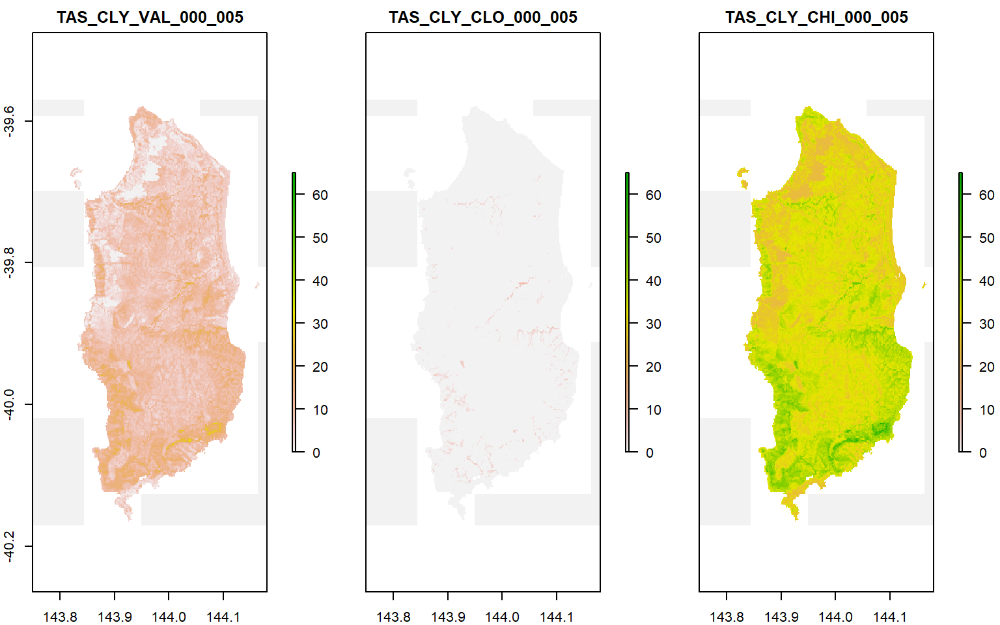

This is a quick overview of how to retrieve data from the Soil and Landscape Grid of Australia.
Two high-level wrapper functions, get_soils_data() and get_lscape_data(), have been provided to manage downloads. To use them correctly, you should be aware of the package datasets slga_attribute_info and slga_product_info. They contain allowable values for some of the function inputs as well as key metadata.
The two tables are derived from information on the SLGA website and in the WCS metadata documents.
Soils data is available in a large number of combinations - each product has a set of available attributes (soil properties). Not all soil attributes are available within each product, but you can check which ones are available in slga_attribute_info. Each soil attribute has six depth slices ranging from the land surface to 2m depth. Each soil attribute also has three layers - the estimated value, plus its lower and upper confidence limits. Detailed metadata for each product can be found on the CSIRO Data Access Portal
The function get_soils_data() is capable of pulling out data for one combination of product, soil attribute, and depth. It gives the option of returning any combination of value and confidence interval layers, either as a raster or rasterStack object.
As a demonstration, the surface (0-5 cm) percentage clay content for King Island is available with data('ki_surface_clay'):
data('ki_surface_clay')
ki_surface_clay
#> class : RasterStack
#> dimensions : 721, 517, 372757, 3 (nrow, ncol, ncell, nlayers)
#> resolution : 0.0008333333, 0.0008333333 (x, y)
#> extent : 143.7496, 144.1804, -40.17042, -39.56958 (xmin, xmax, ymin, ymax)
#> coord. ref. : +proj=longlat +ellps=GRS80 +towgs84=0,0,0,0,0,0,0 +no_defs
#> names : TAS_CLY_VAL_000_005, TAS_CLY_CLO_000_005, TAS_CLY_CHI_000_005
#> min values : 0, 0, 0
#> max values : 32.45988, 11.47951, 60.94624
Note that some offshore areas have 0 values rather than NA; these are difficult to remove safely without an adequate coastline mask. You may need to generate one yourself if you are working along the coast.
The query to retrieve the above maps looked like:
aoi <- c(143.75, -40.17, 144.18, -39.57)
ki_surface_clay <- get_soils_data(product = 'TAS', attribute = 'CLY',
component = 'all', depth = 1,
aoi = aoi, write_out = FALSE)Note that valid product parameters are defined in slga_product_info$Short_Name, and valid attribute parameters in slga_attribute_info$Code. If a particular combination is not available, the function will fail gracefully.
18 landscape datasets are available, describing DEM-derived terrain attributes and climatic influences. These are considered to be effective environmental covariates in soil modelling exercises. Detailed metadata for each product can be found on the CSIRO Data Access Portal.
get_lscape_data() only requires a product code and aoi, as each landscape attribute is a single raster surface. For example, the Multi-resolution Valley Bottom Flatness Index for King Island is given by
ki_mrvbf <- get_lscape_data(product = 'MRVBF', aoi = aoi, write_out = FALSE)slga output datasets are always source-aligned - that is, the returned SLGA data will align with its parent coverage rather than your supplied aoi parameter. This is deliberate; WCS services default to target-alignment, which involves hidden server-side resampling behaviour when a geographical subset is supplied. This behaviour is essential for WCS’ primary use case - accessing data dynamically in a GUI. For constructing reproducible workflows that start with rasters, however, it is not appropriate. If you need a dataset that aligns with other data, it is best practice to carry out any resampling and realignment at your end, after retrieving a ‘clean’ subset of SLGA data. This ensures that these operations are clearly documented. Functions like raster::resample() may be useful at this point.
To retrieve data from e.g. more than one depth, you can use an iterator like base::lapply() or purrr::map(). For instance, to retrieve estimated clay values for all depths over King Island, you could do the following:
# not run
ki_all_clay <- lapply(seq.int(6), function(d) {
get_soils_data(product = 'TAS', attribute = 'CLY', component = 'value',
depth = d, aoi = aoi, write_out = FALSE)
})
ki_all_clay <- raster::brick(ki_all_clay)Similar iteration can be carried out with a vector of attributes or products. Note that while all the soils products align with each other, not all of the landscape products do. Stacking the latter together will require some pre-processing.
Service and coverage level metadata for soil and landscape data can be retrieved with metadata_soils() and metadata_lscape(). For example,
tas_clay_mdc <- metadata_soils('TAS', 'CLY', req_type = 'desc')